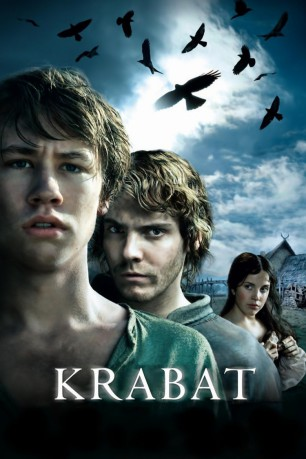

#3559 Krabat and the Legend of the Satanic Mill
 
 IMDB-Wertung: 6.1 / 10
IMDB-Wertung: 6.1 / 10  Metascore: 0
Metascore: 0 
Kurz nach dem Dreißigjährigen Krieg folgt der 14-jährige Bettlerjunge Krabat der Stimme aus seinem Traum und fängt in einer geheimnisvollen Mühle im Koselbruch beim Meister als Lehrling an. Rasch merkt er, dass er und die anderen elf Gefährten nicht nur das Müllerhandwerk lernen, sondern auch in der schwarzen Magie ausgebildet werden. Sein Freund Tonda will ihn vor einem finsteren Schicksal warnen.
Jahr: 2008
Dauer: 119 Minuten
FSK: 12
Land: Deutschland Studio: 20th Century Fox of GermanyTonspuren:
Untertitel:
Auflösung: 1080p (1920x816) Größe: 10035 MB
Genre: Thriller, Drama, Fantasy
Regisseur: Marco Kreuzpaintner
Drehbuch: Laura Beaumont
Soundtrack:
Darsteller:
Datei: X:\2008(G-M)\Krabat and the Legend of the Satanic Mill (2008, FSK12, 1920x816).mkv seit 29.04.2016
Festplatte: HD 2008(G-Z)-2009(A-F)
 Es gibt insgesamt 73 Filme in der Gruppe '2008(G-M)'
Es gibt insgesamt 73 Filme in der Gruppe '2008(G-M)'